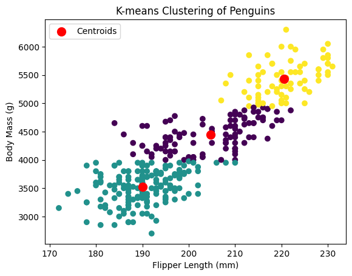

Broadly there are three types of learning methods in ML:
Supervised learning method: Label for corresponding datapoint is available.
Unsupervised learning method: Label for corresponding datapoint is unavailable.
Semisupervised learning method: Lable is available only for a small portion of all the datapoints, most of the datapoints lack label.
Clustering belongs to the category of unsupervised learning method. Generally, it is utilized as a process for finding meaningful structure, explanatory underlying processes, generative features, and groupings inherent in a set of examples. Clustering is the task of dividing the population or data points into a number of disjoint sets such that data points in the same sets are more similar to other data points in the same set and dissimilar to the data points in other sets. Consequently, clustering forms a collection of objects on the basis of similarity and dissimilarity between them.
Clustering methods
Clustering shapes the intrinsic grouping among the unlabelled data. There are no standard for good clustering. It depends on the user, and what criteria they may use which satisfy their need. Based on the assumptions and goal of the task, clustering algorithms can be divided into several categories:
Density-Based Methods: Dense region has some similarities and is different from the lower dense region. For example, DBSCAN (Density-Based Spatial Clustering of Applications with Noise), OPTICS (Ordering Points to Identify Clustering Structure), etc.
Hierarchical Based Methods: Forms a tree-type structure based on the hierarchy. Later, new clusters are formed using the previously formed one. It is further divided into two categories:
Agglomerative (bottom-up approach)
Divisive (top-down approach)
Examples include CURE (Clustering Using Representatives), BIRCH (Balanced Iterative Reducing Clustering and using Hierarchies), etc.
Partitioning Methods: Partitions the datapoints into \(k\) clusters and each partition forms one cluster. Focus is optimizing an objective criterion similarity function. For instance, K-means, CLARANS (Clustering Large Applications based upon Randomized Search), etc.
Grid-based Methods: Data space is formulated into a finite number of cells that form. Such as, STING (Statistical Information Grid), WaveCluster, CLIQUE (CLustering In Quest), etc.
Density Functions Visualization
K-means Clustering
It is the simplest clustering algorithm. It partitions given \(n\) observations into predefined \(k\) clusters. The basis for such clustering is the nearest mean from the \(k\) centroids. Clusters formed in K-Means are spherical or convex in shape.
Code snippet for K-means clustering on the Palmer Penguins dataset:
import pandas as pdfrom sklearn.cluster import KMeansimport matplotlib.pyplot as pltpenguins = pd.read_csv("https://pos.it/palmer-penguins-github-csv")# Display the first few rows of the datasetprint(penguins.head())# Drop missing valuespenguins = penguins.dropna()# Select relevant features for clustering (e.g., flipper length and body mass)features = penguins[['flipper_length_mm', 'body_mass_g']]# Perform K-means clustering with 3 clustersnum_clusters =3kmeans = KMeans(n_clusters=num_clusters, n_init=10, random_state=42)penguins.loc[:, 'Cluster'] = kmeans.fit_predict(features)
species island bill_length_mm bill_depth_mm flipper_length_mm \
0 Adelie Torgersen 39.1 18.7 181.0
1 Adelie Torgersen 39.5 17.4 186.0
2 Adelie Torgersen 40.3 18.0 195.0
3 Adelie Torgersen NaN NaN NaN
4 Adelie Torgersen 36.7 19.3 193.0
body_mass_g sex year
0 3750.0 male 2007
1 3800.0 female 2007
2 3250.0 female 2007
3 NaN NaN 2007
4 3450.0 female 2007
If the user choose number of clusters to be \(3\) and relevant features for clustering are Flipper Length (mm) and Body Mass (g), we can observe the following clustering:

Figure 1: K-means clustering on the Palmer Penguins dataset
We can observe the centroid (marked as red circle) of the three clusters from K-means clustering.
DBSCAN (Density-Based Spatial Clustering of Applications with Noise)
Partitioning methods (K-means, PAM clustering) and hierarchical clustering focus on finding spherical-shaped clusters or convex clusters. As a result, they are suitable only for compact and well-separated clusters. Moreover, their performance deteriorate with the presence of noise and outliers in the data. DBSCAN can handle dataset containing non-convex shape clusters and outliers. The basis for this clustering are the maximum distance between two samples for them to be considered neighbors and the minimum number of samples in a neighborhood within that radius.
Code snippet for DBSCAN on the Palmer Penguins dataset:
import pandas as pdfrom sklearn.cluster import DBSCANimport matplotlib.pyplot as pltpenguins = pd.read_csv("https://pos.it/palmer-penguins-github-csv")# Drop missing valuespenguins = penguins.dropna()# Select relevant features for clustering (e.g., flipper length and body mass)features = penguins[['flipper_length_mm', 'body_mass_g']]# Perform DBSCAN clustering# Adjust eps and min_samples based on datadbscan = DBSCAN(eps=75, min_samples=15)penguins.loc[:, 'Cluster'] = dbscan.fit_predict(features)
If the user choose the maximum distance between two samples to be \(75\), the minimum number of samples in a neighborhood within that radius to be \(15\) and relevant features for clustering are Flipper Length (mm) and Body Mass (g), we can observe the following clustering:
Even though it got us three clusters, this one is quite different from the previous one we got from K-means clustering. This clustering provides irregular shape other than the spherical-shaped clusters or convex clusters.